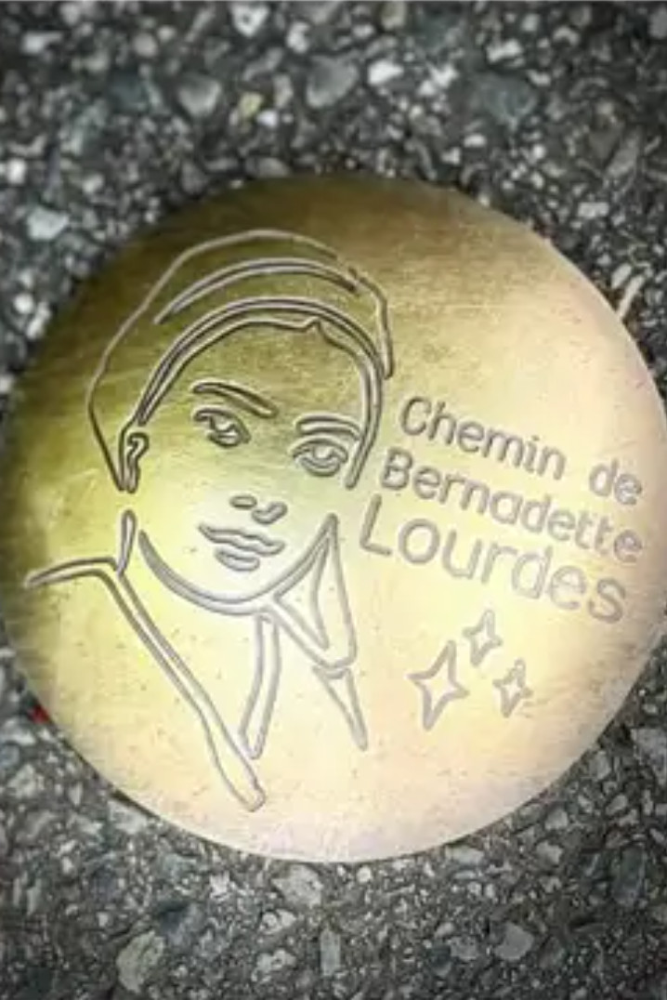

LE CHEMIN DE BERNADETTE
Lorsque vous irez à Lourdes en septembre prochain, vous remarquerez peut être que des clous en laiton, à l’effigie de Bernadette Soubirous, ont été implantés dans le sol. C’est le nouveau chemin de Bernadette qui a été inauguré le 18 février dernier par Thierry Lavit, maire de Lourdes et le Père Michel Daubanes, recteur du Sanctuaire Notre-Dame de Lourdes.
Il a pour vocation de se prolonger jusqu’à Nevers et va permettre à la ville de Lourdes de proposer un nouvel itinéraire construit sur l’histoire de Bernadette et matérialisé au sol par des clous pour faciliter le guidage tout au long du circuit.
Ces clous jalonneront le parcours et permettront d’indiquer la direction à emprunter aux visiteurs.
Ces clous de balisage vont participer à l’embellissement de la ville. Ils éveilleront la curiosité et inciteront les visiteurs à une promenade contemplative.
Une très belle initiative…
